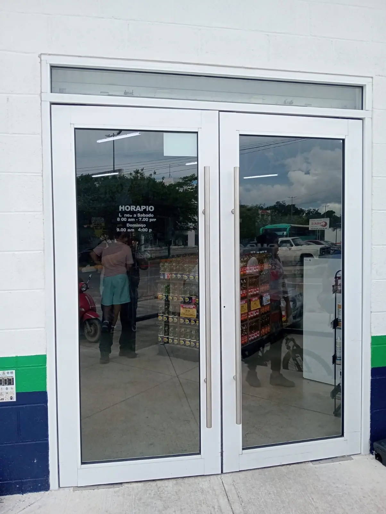

An older plaza in Puerto Morelos loses tenants for visible reasons — a tired facade, a leaking roof, a dark car park, improvised signs — and invisible ones: tripping breakers, no backup power, a struggling treatment plant. We renovate facades, roofs, parking, common areas and services in phases, at night where needed, so the tenants keep trading and the rents can go up when we finish.

Cladding, paint systems, canopies, glazing and storefront criteria that make the plaza look new.
Membranes or polyurethane systems, drainage and parapets — leaks are the first reason tenants leave.
Repaving, striping, drainage, shade and LED lighting with photocells.
Corridors, toilets, accessibility, wayfinding and landscaping.
Electrical capacity, per-unit metering, generator, cistern and treatment plant.
New totem, unified tenant signage and a plaza identity.
A plaza renovation is planned around the tenants’ revenue. We split the work into phases by zone, keep at least one entrance and most parking open, schedule noisy and dusty work at night or before opening, protect storefronts and walkways, and agree every shutdown of power or water in advance. Tenants get a schedule and a contact; the landlord gets a weekly report. Done this way, nobody closes and the plaza reopens visibly better zone by zone.
Fix what drives tenants away before what photographs well: roof leaks and drainage, electrical capacity and backup power, and the treatment plant. Then the facade, parking lighting and signage, which change how customers see the plaza and support higher rents at renewal. In the coastal climate, specify salt-resistant metals, UV-stable paint systems and hurricane-rated glazing so the renovation lasts.
Puerto Morelos is small and low-rise, and it sits next to a protected reef and mangroves, so plazas here are modest: one or two levels, a convenience or pharmacy anchor and local services. Most new demand is along Highway 307 and in the colonia, where the housing is growing.
| Work | Unit | Cost |
|---|---|---|
| Facade refresh: repairs, paint system, canopies | per m² of facade | $1,600–$4,900 |
| New facade cladding or ventilated facade | per m² of facade | $4,900–$9,800 |
| Roof waterproofing (acrylic to membrane) | per m² | $330–$1,310 |
| Parking repaving, striping and drainage | per m² | $870–$1,740 |
| Impact glazing for storefronts | per m² of window | $9,800–$19,600 |
| Common-area generator with transfer switch | total | $327,000–$981,000 |
| Signage totem and wayfinding | total | $164,000–$654,000 |
| Working around trading tenants | premium | +20–40% |
In Puerto Morelos: Plaza construction · Retail store fit-out · Retail store remodel · Commercial construction · Parking lots · Construction permits
Plaza renovation in other towns: Cancún · Playa del Carmen · Tulum · Puerto Aventuras
Plazas cluster: Plazas & shopping centres · Shopping mall construction · Plaza maintenance · Cost to build a plaza · Retail fit-out cost
Commercial cost calculator
Send the lot, the unit or the plaza; we visit, check permits and send a line-item budget. Reply in 2 minutes.
Quote on WhatsAppFideicomiso: how foreigners own coastal property · Buying land in Mexico: due diligence · Concierge construction service · Managing a build from abroad · Build or buy in Playa del Carmen? · How long a build takes in Mexico · Contractor stopped? Finishing a stalled build · Closing on property: process and costs · Where to build: area by area · Cost to build a house in Mexico · Land use, COS and CUS · Soils studies on limestone
Your review helps other owners decide, and helps us improve.
Write a reviewRead our Google reviews